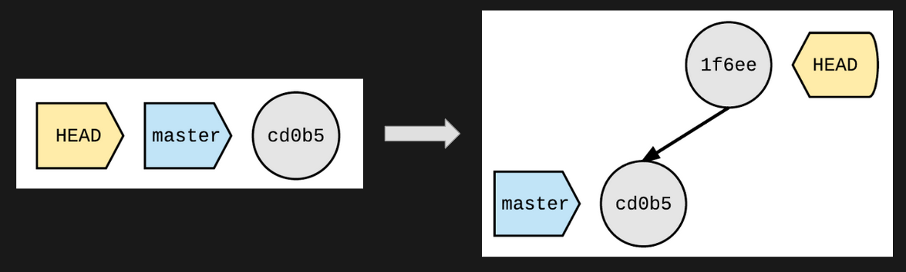
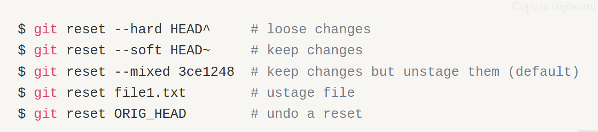
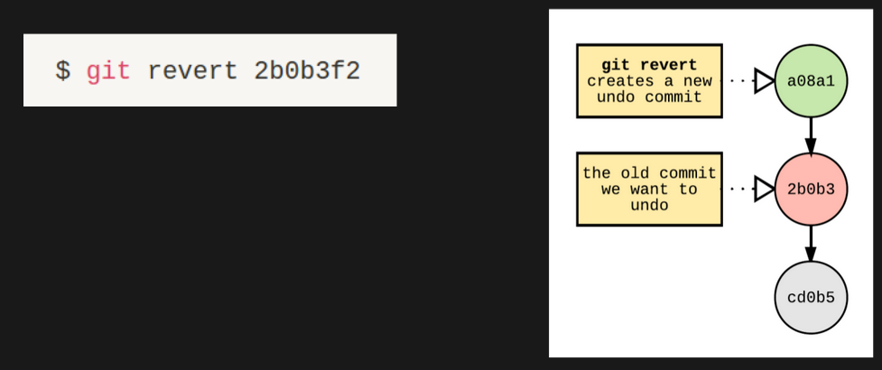
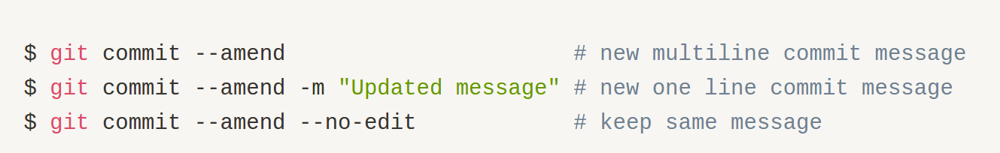
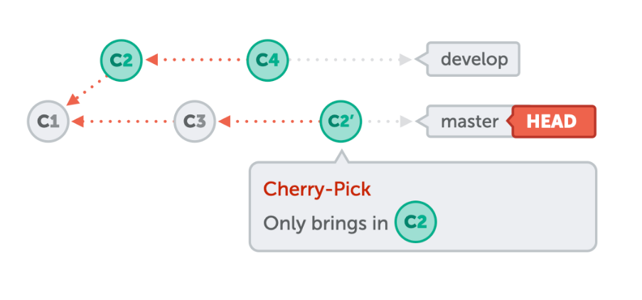
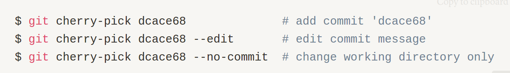

GIT: Correcting mistakes
- Purva Sheth
Stash
- Save uncommitted changes
- Keep work safely ( put it in a box )
Checkout
- Create and switch branches
- Check the state after a old commit
- Restore files
- Get back deleted files which were committed before
Caution
- Files are overwritten and changes are discarded
- “Dangling HEAD” case when a commit is checkout. Create a branch to save new commits

Reset
- Unstage files
- Redo commits in 3 ways:

Caution : rewrites history (use locally only)
Revert - “Safe Reset”
- Does not change history
- Adds a new commit undoing changes of previous commit

Amend
Make changes to the most recent commit
- Add files you forgot to commit
- Remove files you committed by mistake
- Edit the commit message

Caution : rewrites history ( use locally only )
Cherry Pick
Pick commits from other branches and add them to current branch


Caution : creates duplicate commits ( use rarely )